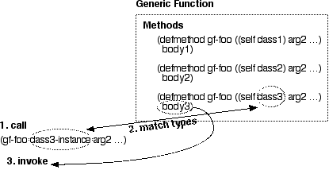
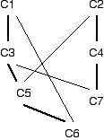

Эта глава продолжает рассмотрение CLOS (Common Lisp Object System), которое мы начали в Главе 7, в которой мы видели, как объекты хранят данные. В этой главе мы узнаем о том, как объекты получают свое поведение.
Обобщенная функция обеспечивает поведение, основыванное на типе объекта. Поведение выбирается в соответствии с типами аргументов обобщенной функции. Обобщенная функция передает управление определенному методу, который обеспечивает наилучшее соответствие типам аргументов, используемых для вызова обобщенной функции.

Вы определяете метод с помощью макроса Lisp DEFMETHOD.
В своей простейшей форме DEFMETHOD ожидает имя и
специализирующий(конкретизирующий обобщенную функцию) лямбда-список.
Специализирующий лямбда-список аналогичен списку формальных параметров,
который вы предоставляете для форм LAMBDA или DEFUN;
разница заключается в том, что вы можете указать тип каждого параметра. Метод
будет вызываться только тогда, когда вызов обобщенной функции (который выглядит точно
так же, как вызов функции) задает параметры, соответствующие типам его лямбда-
списка. Чтобы специализировать параметр в форме DEFMETHOD ,
просто назовите параметр и его тип в списке. Например:
(defmethod method1 ((param1 number) (param2 string)) ...) (defmethod method2 ((param2 float) (param2 sequence)) ...)
Вы также можете оставить тип параметра неопределенным, просто указав его имя; этот тип параметра будет соответствовать любому типу данных. В этом примере первый параметр не является специализированным:
(defmethod method3 (param1 (param2 vector)) ...)
Обратите внимание, что типы параметров не обязательно должны быть типами классов CLOS. Если вы хотите специализировать метод для одного конкретного класса CLOS, вы можете специализировать один из аргументов для этого класса, как мы видели на первом рисунке в этой главе. Если вы специализировали один параметр для класса CLOS, а остальные параметры оставили неспециализированными, то вы эмулировали метод одиночной отправки(single-dispatch), общий для некоторых "классических" объектно-ориентированных языков программирования. В этом ограниченном случае вы можете думать о методе как о связанном с классом. В следующем разделе мы увидим, что эта ассоциация разрушается, когда мы связываем метод с несколькими классами.
Вы, вероятно, задаетесь вопросом, как создаются обобщенные функции, когда все, что вы делаете, - это определяете методы. При определении метода Lisp создает обобщенную функцию, если она еще не существует. Когда Lisp создает эту обобщенную универсальную функцию для вас, он отмечает имя, количество обязательных и необязательных аргументов, а также наличие и имена ключевых параметров. Когда вы создаете другой метод с таким же именем, он должен согласовать с обобщенной функцией детали параметров, которые были записаны в обобщенной функции. Это соглашение называется Lambda list congruence(совпадение лямбда-списков) - Lisp будет сигнализировать об ошибке, если вы попытаетесь создать новый метод с несоответсвующим лямбда-списком.
Мультиметод - это метод, который выбирается на основе типов двух или более его аргументов. Если у вас есть метод, выбранный для двух или более классов, то мы не можем действительно сказать, что класс (или объект, который является экземпляром этого класса) "имеет" определенный метод.
Связь методов с классами становится еще более слабой, если учесть, что один или несколько аргументов метода могут специализироваться на объекте, который не является классом. Если мы рассчитываем найти какой-то удобный способ сказать, что метод "принадлежит" определенному классу, мы просто не найдем его.
Более простые (и менее выразительные) объектные системы, чем CLOS, действительно связывают метод с определенным классом. CLOS - нет. Это важный момент, поэтому позвольте мне перефразировать его: методы CLOS не являются частью какого - либо класса, для которого они могут предоставлять услуги.
Метод - это часть обобщенной функции. Обобщенная функция анализирует фактические параметры и выбирает метод для вызова на основе соответствия между фактическими параметрами и специализированными(указанными) лямбда-списками в определениях методов. И, повторяя замечание, сделанное в предыдущем параграфе, обобщенные функции не являются частью каких-либо классов, над которыми работают методы обобщенной функции.
При определении метода обявляют типы его параметров (в специализирующем
лямбда-списке), так что метод может быть вызван только при использовании параметров
того же или более специфического типа. Например, если параметр специализируется
типом NUMBER, он может соответствовать
INTEGER, FIXNUM, FLOAT,
BIGNUM, RATIONAL, COMPLEX,
или каким либо другим подтипом NUMBER.
Но что делать, если вы определяете два метода, которые могут соответствовать одним и тем же типам? Рассмотрим следующие определения.
(defmethod op2 ((x number) (y number)) ...) ; method 1 (defmethod op2 ((x float) (y float)) ...) ; method 2 (defmethod op2 ((x integer) (y integer)) ...) ; method 3 (defmethod op2 ((x float) (y number)) ...) ; method 4 (defmethod op2 ((x number) (y float)) ...) ; method 5
Вызов формы (OP2 11 23) потенциально соответствует
методам 1 и 3, поскольку оба аргумента имеют тип INTEGER,
который является подтипом NUMBER. CLOS разрешает
неоднозначность, выбирая более конкретное совпадение, таким образом,
метод 3 выбирается для вызова (OP2 11 23).
Та же стратегия разрешения выбирает метод 5 для (OP2 13 2.9),
метод 4 для (OP2 8.3 4/5) и метод 1 для (OP2 5/8 11/3).
Общее правило состоит в том, что CLOS выбирает метод, основанный на наиболее
специфичных типах соответствия, и левый аргумент всегда более специфичен,
чем аргументы справа от него. Вторая часть этого правила означает, что аргументы
слева служат тай-брейкерами(уточнениями) для тех, кто находится дальше справа. Рассмотрим эти методы:
(defmethod Xop2 ((x number) (y number)) ...) ; method 1 (defmethod Xop2 ((x float) (y number)) ...) ; method 2 (defmethod Xop2 ((x number) (y float)) ...) ; method 3
Вызов (XOP2 5.3 4.1) вызовет метод 2. И Метод 2, и метод 3
более специфичны, чем метод 1. Метод 2 имеет более специализированный тип
в первой позиции аргумента по сравнению с методом 3, поэтому вызывается
метод 2.
Помимо диспетчеризации на основе типов аргументов, CLOS может выполнять диспетчеризацию на основе конкретных объектов.
? (defmethod idiv ((numerator integer) (denominator integer))
(values (floor numerator denominator)))
#<STANDARD-METHOD IDIV (INTEGER INTEGER)>
? (defmethod idiv ((numerator integer) (denominator (eql 0)))
nil)
#<STANDARD-METHOD IDIV (INTEGER (EQL 0))>
? (idiv 4 3)
1
? (idiv 6 2)
3
? (idiv 4 0)
NIL
Здесь мы специализировались на целочисленном значении 0. Вы можете
специализироваться на любом объекте, который можно выделить с помощью
предиката EQL. Числа, символы и экземпляры объектов могут
быть проверены таким образом. См. Главу 17
для получения дополнительной информации по предикату EQL.
Класс - это тип, а подкласс-это подтип. Поэтому, когда вы определяете эти классы:
(defclass c1 () ...) (defclass c2 (c1) ...)
тогда C2 - это подкласс C1. Если затем вы используете
типы C1 и C2 в качестве специализации для определения
метода, то C2 будет более специфичным типом
(см. предыдущий раздел), чем C1.
Но что делать, если вы определяете классы, которые наследуются от более чем одного класса? Как вы решаете, какой класс более специфичен, чем другой? Рассмотрим следующие определения классов:
(defclass c1 () ...) (defclass c2 () ...) (defclass c3 (c1) ...) (defclass c4 (c2) ...) (defclass c5 (c3 c2) ...) (defclass c6 (c5 c1) ...) (defclass c7 (c4 c3) ...)
Эти определения дают нам иерархию наследования, которая выглядит следующим образом: жирные линии связывают подкласс с первым родительским классом, а более светлые линии - со вторым родительским классом:

Теперь рассмотрим следующие определения методов, которые специализируются на этой иерархии классов:
(defmethod m1 ((x c1)) ...) ; method 1 (defmethod m1 ((x c2)) ...) ; method 2
Ясно, что вызов обобщенной функции M1 с объектом типа
C1 или C3 вызовет метод 1,
а вызов обобщенной функции с объектом типа C2 или C4
вызовет метод 2. Но что произойдет, если мы вызовем обобщенную функцию M1
с объектом типа C5, C6, или C7?
Все эти классы наследуются-прямо или косвенно-как от
C1, так и от C2.
Если мы вызываем обобщенную функцию M1 с объектом типа
C5, C6, или C7 CLOS должен решить,
следует ли вызывать метод 1 или Метод 2. (Он не может делать и то, и другое.)
Это решение основано на некоторой мере того, является ли
C1 или C2 более конкретным родительским классом.
Мера основана на положении родительского класса в списке предшествования/приоритетов
классов(class precedence list) подкласса. Вот списки предшествования классов
(CPLs) для C5, C6, и
C7:
Class CPL ----- --- C5 (C5 C3 C1 C2) C6 (C6 C5 C3 C1 C2) C7 (C7 C4 C2 C3 C1)
Классы в начале CPL(списке предшествования классов) являются более конкретными,
так что C5 и C6 являются более конкретными для
C1 и C7 являются более конкретными для C2.
Поэтому вызов их обобщенной функции M1 с объектом типа
C5 или C6 вызовет метод 1.
Вызов M1 с объектом типа C7 вызовет метод 2.
Следующий вопрос, который вы должны задать: "как CLOS определяет CPL?"Конечно,
существует алгоритм вычисления CPL - вы можете найти его описание в справочном
руководстве Lisp. Или вы можете определить некоторые классы и спросить Лисп, чтобы
он сказал вам их CPL; большинство реализаций включают в себя функцию с именем
CLASS-PRECEDENCE-LIST, которая ожидает объект класса в качестве своего
единственного аргумента (используйте FIND-CLASS, чтобы получить
объект класса по его названию) и возвращает CPL.
? (class-precedence-list (find-class 'c6)) (C6 C5 C3 C1 C2)
Проектируйте консервативно с множественным наследованием, и вам не придется зависеть от знания алгоритма, с помощью которого CLOS вычисляет CPL.
Если вы определяете методы, как мы видели в этой главе, то создаваемая обобщенная функция будет предлагать возможность, называемую стандартной комбинацией методов. Все методы, которые мы до сих пор использовали, были первичными методами. В рамках стандартной комбинации методов мы также можем определить методы "до"(before), "после"(after) и "вокруг"(around), которые объединяются с первичным/основным методом.
Чтобы определить метод before, after, или around,
мы добавляем соответствующее ключевое слово (квалификатор метода) в нашу форму
DEFMETHOD, например:
(defmethod madness :before (...) ...) (defmethod madness :after (...) ...) (defmethod madness :around (...) ...)
Давайте рассмотрим комбинацию стандартных методов в действии. Мы начнем
с методов :BEFORE и :AFTER.
; Define a primary method ? (defmethod combo1 ((x number)) (print 'primary) 1) #<STANDARD-METHOD COMBO1 (NUMBER)> ; Define before methods ? (defmethod combo1 :before ((x integer)) (print 'before-integer) 2) #<STANDARD-METHOD COMBO1 :BEFORE (INTEGER)> ? (defmethod combo1 :before ((x rational)) (print 'before-rational) 3) #<STANDARD-METHOD COMBO1 :BEFORE (RATIONAL)> ; Define after methods ? (defmethod combo1 :after ((x integer)) (print 'after-integer) 4) #<STANDARD-METHOD COMBO1 :AFTER (INTEGER)> ? (defmethod combo1 :after ((x rational)) (print 'after-rational) 5) #<STANDARD-METHOD COMBO1 :AFTER (RATIONAL)> ; Try it ? (combo1 17) BEFORE-INTEGER BEFORE-RATIONAL PRIMARY AFTER-RATIONAL AFTER-INTEGER 1 ? (combo 4/5) BEFORE-RATIONAL PRIMARY AFTER-RATIONAL 1
Когда мы вызываем COMBO1, CLOS определяет, какие методы
применимы. Как мы узнали ранее, применим только один основной метод.
Но, как мы видели в вызове to (COMBO1 17), у нас может
быть несколько применимых методов :BEFORE и :AFTER.
Поскольку integer - это подтип rational, и аргумент для
COMBO1 целочисленный, применимы методы :BEFORE
и :AFTER, специализирующиеся на целочисленных и рациональных аргументах.
Так CLOSE определил набор применимых методов: первичный метод и
некоторые методы до и после него. Стандартная комбинация методов
определяет порядок, в котором эти методы вызываются. Во-первых,
будут вызваны все применимые методы :BEFORE, более
конкретные методы, вызываются первыми. Затем вызывается соответствующий
первичный метод. Далее вызвываются все применимые методы :AFTER,
причем более конкретные методы вызываются последними. Наконец, значение
первичного метода возвращается как значение универсальной функции.
:BEFORE и :AFTER методы часто используются
для добавления дополнительных поведений к методу. Они обычно вводят
какой-то побочный эффект - выполняя ввод-вывод, изменяя глобальное
состояние или изменяя слоты одного или нескольких объектов, передаваемых
в качестве параметров. Существует три действия, недоступные для методов
:BEFORE и :AFTER
Но стандартная комбинация методов предлагает третий вид
квалифицированного метода, метод :AROUND, который может
выполнять все эти действия. :AROUND метод определяется
с помощью квалификатора метода, как и следовало ожидать:
(defmethod madness :around (...) ...)
Если обобщенная функция имеет один или несколько определенных методов
:AROUND, то сначала вызывается наиболее специлизированный/конкретный
метод :AROUND, даже если есть применимые методы :BEFORE.
На этом этапе метод :AROUND имеет полный контроль - если он просто
возвращается, то ни один из других применимых методов не будет вызван. Обычно
метод :AROUND вызывает метод CALL-NEXT-METHOD, который
позволяет осуществлять управление с помощью других применимых методов.
CALL-NEXT-METHOD вызывает следующий наиболее
специфичный метод :AROUND; если нет менее специфичных
применимых методов :AROUND, то CALL-NEXT-METHOD
вызывает все применимые методы before, primary и after точно так же,
как описано выше. Значение, возвращаемое наиболее специфичным методом
:AROUND, возвращается обобщенной функцией; обычно вы будете
использовать значение - или его некоторую модификацию - возвращаемое методом
CALL-NEXT-METHOD.
Если вы вызываете CALL-NEXT-METHOD без аргументов,
он использует аргументы текущего метода. Но вы можете вызвать метод
CALL-NEXT-METHOD с аргументами и изменить параметры,
видимые вызываемым методом(ами).
; Define a primary method
? (defmethod combo2 ((x number)) (print 'primary) 1)
#<STANDARD-METHOD COMBO2 (NUMBER)>
; Define before methods
? (defmethod combo2 :before ((x integer)) (print 'before-integer) 2)
#<STANDARD-METHOD COMBO2 :BEFORE (INTEGER)>
? (defmethod combo2 :before ((x rational)) (print 'before-rational) 3)
#<STANDARD-METHOD COMBO2 :BEFORE (RATIONAL)>
; Define after methods
? (defmethod combo2 :after ((x integer)) (print 'after-integer) 4)
#<STANDARD-METHOD COMBO2 :AFTER (INTEGER)>
? (defmethod combo2 :after ((x rational)) (print 'after-rational) 5)
#<STANDARD-METHOD COMBO2 :AFTER (RATIONAL)>
; Define around methods
? (defmethod combo2 :around ((x float))
(print 'around-float-before-call-next-method)
(let ((result (call-next-method (float (truncate x)))))
(print 'around-float-after-call-next-method)
result))
#<STANDARD-METHOD COMBO2 :AROUND (FLOAT)>
? (defmethod combo2 :around ((x complex)) (print 'sorry) nil)
#<STANDARD-METHOD COMBO2 :AROUND (COMPLEX)>
? (defmethod combo2 :around ((x number))
(print 'around-number-before-call-next-method)
(print (call-next-method))
(print 'around-number-after-call-next-method)
99)
; Try it
? (combo2 17)
AROUND-NUMBER-BEFORE-CALL-NEXT-METHOD
BEFORE-INTEGER
BEFORE-RATIONAL
PRIMARY
AFTER-RATIONAL
AFTER-INTEGER
1
AROUND-NUMBER-AFTER-CALL-NEXT-METHOD
99
? (combo2 4/5)
AROUND-NUMBER-BEFORE-CALL-NEXT-METHOD
BEFORE-RATIONAL
PRIMARY
AFTER-RATIONAL
1
AROUND-NUMBER-AFTER-CALL-NEXT-METHOD
99
? (combo2 82.3)
AROUND-FLOAT-BEFORE-CALL-NEXT-METHOD
AROUND-NUMBER-BEFORE-CALL-NEXT-METHOD
PRIMARY
1
AROUND-NUMBER-AFTER-CALL-NEXT-METHOD
AROUND-FLOAT-AFTER-CALL-NEXT-METHOD
99
? (combo2 #c(1.0 -1.0))
SORRY
NIL
Одна вещь, которую вы не можете сделать, - это предоставить аргументы
для вызова метода CALL-NEXT-METHODCOMBO2 не будет работать:
? (defmethod combo2 :around ((x float))
(call-next-method (floor x))) ; FLOOR returns an integer
#<STANDARD-METHOD COMBO2 :AROUND (FLOAT)>
? (combo2 45.9)
Error: applicable methods changed
Протокол метаобъектов(metaobject protocol = MOP) - это набор функций, которые
раскрывают большую часть лежащую в основе работы CLOS. Мы уже видели одну
функцию, которая принадлежит к MOP CLASS-PRECEDENCE-LIST. Некоторые
функции MOP, такие как CLASS-PRECEDENCE-LIST, дают вам возможность
заглянуть внутрь работы CLOS. Вот несколько примеров:
Function Argument Returns -------- -------- ------- CLASS-DIRECT-SUBCLASSES a class a list of the immediate subclasses CLASS-DIRECT-SUPERCLASSES a class a list of the immediate superclasses CLASS-DIRECT-SLOTS a class a list of non-inherited slots CLASS-DIRECT-METHODS a class a list of non-inherited methods
Другие функции MOP позволят вам изменить поведение CLOS. Вы можете использовать эту возможность для расширения CLOS - возможно, для реализации постоянного хранилища объектов - или для изменения поведения, чтобы оно более точно соответствовало другому типу объектной системы. Подобные изменения выходят далеко за рамки данной книги. Кроме того, вы должны знать, что MOP не является (пока, по состоянию на начало 1999 года) стандартной частью CLOS, и нет никакого определения MOP, признанного каким-либо национальным или международным органом по стандартизации.
До сих пор определяющим документом для MOP является The Art of the Metaobject Protocol. Большинство поставщиков Lisp предоставляют по крайней мере частичную реализацию MOP; вероятно, вам следует начать с документации поставщика, если вы заинтересованы в MOP.